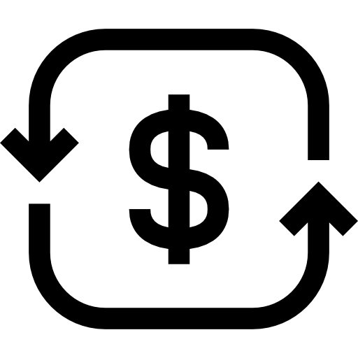

경제 뉴스 브리핑 — 2026년 11월 13일 (금)| 종목 | 가격 | 변동 |
|---|---|---|
| 🔴 S&P 500 | 7,592.40 | ▼ 0.35% |
| 🔴 나스닥 | 25,366.09 | ▼ 0.39% |
| 🔴 반도체 ETF | nan | ▼ nan% |
| 🔴 엔비디아 | nan | ▼ nan% |
| 🔴 COMEX 금 | 3,917.20 | ▼ 2.08% |
| 🔴 달러/원 환율 | 1,330.83 | ▼ 0.41% |
| 🟢 WTI 원유 | 88.33 | ▲ 2.08% |
'세번째 불륜' 젠슨 황 퇴진에 AI칩 독주 '흔들': 엔비디아 CEO의 퇴진이 대만의 반도체 산업에 미치는 영향이 우려되고 있으며, 대만의 연간 엔비디아 지출이 약 1000억 달러에 달해 충격이 클 것으로 보인다.
현대자동차, '미래모빌리티학교' 참가 모집: 현대차가 자율주행 및 미래 모빌리티 관련 교육 프로그램을 확대하며, 일본 토요타의 유사 프로그램과 경쟁하고 있다.
워시 연준 의장, AI·생산성 콘퍼런스서 연설: 미국 연준 의장이 AI와 신기술이 경제에 미치는 영향을 점검하며, 향후 정책 방향에 대한 논의가 이루어질 예정이다.
앤스로픽 IPO, 약 6배 주문: 앤스로픽의 IPO에 대한 수요가 예상보다 높아, 기존 투자자 우선 고려가 이루어질 것으로 보인다.
환율·유가 하락에 10월 수입물가 1.8%↓: 원·달러 환율과 국제유가의 동시 하락으로 수입물가가 감소하였으며, 이는 경제 전반에 긍정적인 영향을 미칠 수 있다.
Nvidia’s Disappearing Singapore Sales Deepen Mystery Around Megaspeed: 엔비디아의 싱가포르 매출 감소가 AI 칩 시장의 불확실성을 더욱 부각시키고 있으며, 이는 투자자들에게 우려를 낳고 있다.
Anthropic IPO Is ‘Jenga Block’ Holding Up Next Leg of AI Trade: 앤스로픽의 IPO가 AI 산업의 건강성을 평가할 중요한 지표로 여겨지며, 이는 향후 AI 주식 시장의 상승세에 기여할 것으로 기대된다.
Record credit card balances, fewer trips to McDonald’s: 미국 소비자들이 신용카드 잔액을 늘리고 있으며, 이는 경제적 압박을 나타내는 신호로 해석되고 있다.